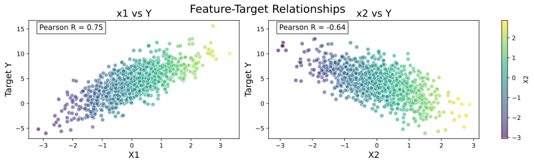

%matplotlib inline
%config InlineBackend.figure_format = 'svg'
import numpy as np
import pandas as pd
import torch深度学习入门(day1) - 线性回归
线性回归的数学原理
线性回归基于几个简单的假设：首先，假设自变量 x 和因变量 y 之间的关系是线性的，即 y 可以表示为 x 中元素的加权和，这里通常允许包含观测值的一些噪声；其次，我们假设任何噪声都比较正常，如噪声遵循正态分布。
有一组数据 \mathbf{X} = \begin{bmatrix} x_{11} & x_{12} & \cdots & x_{1n} \\ x_{21} & x_{22} & \cdots & x_{2n} \\ \vdots & \vdots & \ddots & \vdots \\ x_{d1} & x_{d2} & \cdots & x_{dn} \end{bmatrix} 和 y = \begin{bmatrix} y_1 \\ y_2 \\ \vdots \\ y_n \end{bmatrix} 要如何找到一条由 w = [w_1, w_2, w_3, \dots, w_n] 和 b 确定的曲线 \hat{y}=wx^T+b，使得 \hat{y} 尽可能的接近 y?
如何表示预测值 \hat{y} 与真实值 y 的接近程度？
使用均方损失 \mathrm{\ell}(X, y, w, b)=\frac{1}{2}\cdot\frac{1}{n}\sum\limits_{i=1}^{n}{(y_i-\hat{y_i})^2}=\frac{1}{2}\cdot\frac{1}{n}\sum\limits_{i=1}^{n}{(y_i-\langle w, x_i \rangle - b)^2}=\frac{1}{2n}||y-(Xw+b)||^2 ，用 \frac{1}{2} 抵消求导后的系数简化计算。
如何根据损失更新 w 和 b？
对于给定的 X, y，求出一组 w^*, b^* 使得 \mathrm{\ell}(X, y, w, b) 取得最小值：w^*, b^*=\underset{w, b}{\arg\max}{\mathrm{\ell}(X, y, w, b)}。对于一些函数可以用偏导数为0解出极值点，但是大多数情况无解，所以要用到梯度下降算法： w_{k+1} = w_{k} - \alpha\frac{\partial \ell}{\partial w} 将偏差b加入到权重简化计算：X \leftarrow \begin{bmatrix} X \\ 1 \end{bmatrix}，w \leftarrow \begin{bmatrix} w \\ b \end{bmatrix}
线性回归代码实现
准备训练数据
首先导入包
生成训练数据集
# 生成配置参数
def synthetic_data(w, b, num_examples): #@save
"""生成y=Xw+b+噪声"""
X = torch.normal(0, 1, (num_examples, len(w)))
y = torch.matmul(X, w) + b
y += torch.normal(0, 0.01, y.shape)
return X, y.reshape((-1, 1))
true_w = torch.tensor([2.4, -2.1])
true_b = 4.1
features, labels = synthetic_data(true_w, true_b, 1000)可视化特征与目标值的关系
df = pd.DataFrame(features, columns=[f'x{i+1}' for i in range(len(true_w))])
df['y'] = labels
import matplotlib.pyplot as plt
def show_scatter(df):
features = df.columns[0:-1] # 获取所有特征列名
# 创建组合画布（宽度增大适应横向布局）
fig, axes = plt.subplots(
nrows=1, # 单行布局
ncols=len(features), # 列数等于特征数量
figsize=(6 * len(features), 3.5), # 动态宽度适配特征数量
dpi=100,
constrained_layout=True # 自动调整子图间距
)
# 并行循环特征与对应的坐标轴
for ax, feature in zip(axes, features):
# 在指定坐标轴上绘制散点图
sc = ax.scatter(
df[feature], df['y'],
alpha=0.6,
edgecolor='w',
s=45,
c=df[feature],
cmap='viridis'
)
# 添加颜色条（共享同一刻度）
if ax == axes[-1]: # 只在最后一个坐标轴添加颜色条
plt.colorbar(sc, ax=axes, label=feature.upper())
# 添加统计信息
corr = df[feature].corr(df['y'])
ax.text(
0.05, 0.92,
f'Pearson R = {corr:.2f}',
transform=ax.transAxes,
fontsize=12,
bbox=dict(facecolor='white', alpha=0.8)
)
# 设置坐标标签
ax.set_xlabel(feature.upper(), fontsize=14)
ax.set_ylabel('Target Y', fontsize=14)
ax.set_title(f'{feature} vs Y', fontsize=16)
# 调整整体标题（可选）
fig.suptitle('Feature-Target Relationships', fontsize=18, y=1.02)
plt.show()
show_scatter(df)
小批量读取数据集
import random
import torch
def data_iter(batch_size, features, labels):
if len(features) != len(labels):
print("len(features) != len(labels)")
raise IndexError
num_examples = len(features)
indices = list(range(num_examples))
random.shuffle(indices)
for i in range(0, num_examples, batch_size):
batch_indices = torch.tensor(
indices[i:min(i+batch_size, num_examples)]
)
yield features[batch_indices], labels[batch_indices]定义模型
初始化模型参数w ,b
# w = torch.normal(0, 0.01, size=(2,1), requires_grad=True) # 长度为2的列向量
w = torch.zeros((2, 1), requires_grad=True)
b = torch.zeros(1, requires_grad=True)定义线性回归模型
def linreg(X, w, b):
return torch.matmul(X, w) + b定义损失函数
\mathrm{\ell}(X, y, w, b)=\frac{1}{2}\cdot\frac{1}{n}\sum\limits_{i=1}^{n}{(y_i-\hat{y_i})^2}
def squared_loss(y_hat, y):
if len(y) != len(y_hat):
print("len(y) != len(y_hat)")
raise ValueError
return ((y_hat - y.reshape(y_hat.shape)) ** 2).mean() / 2定义梯度下降算法
def sgd(params, lr):
with torch.no_grad():
for param in params:
param -= lr * param.grad
param.grad.zero_()开始训练
batch_size = 10
lr = 0.03
num_epochs = 3
net = linreg
loss = squared_loss
for epoch in range(num_epochs):
for X, y in data_iter(batch_size, features, labels):
l = loss(net(X, w, b), y)
l.backward()
sgd([w, b], lr)
with torch.no_grad():
train_l = loss(net(features, w, b), labels)
print(f'epoch {epoch+1}, loss {float(train_l.mean()):f}')epoch 1, loss 0.029633
epoch 2, loss 0.000117
epoch 3, loss 0.000049print(f'w的估计误差: {true_w - w.reshape(true_w.shape)}')
print(f'b的估计误差: {true_b - b}')w的估计误差: tensor([ 3.9816e-05, -1.4021e-03], grad_fn=<SubBackward0>)
b的估计误差: tensor([0.0001], grad_fn=<RsubBackward1>)总结
学习了基础的线性回归模型，当加入更多参数时，根据参数的取值范围和相关性，线性回归无法解决问题，需进一步了解数据预处理以及梯度下降算法。